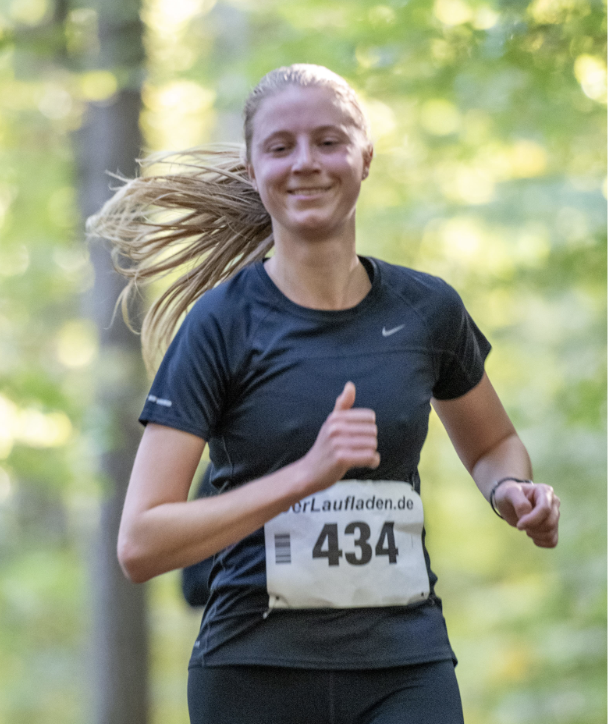
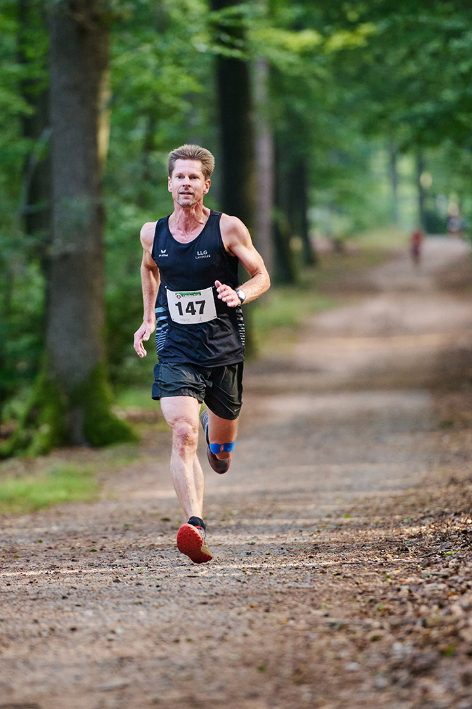
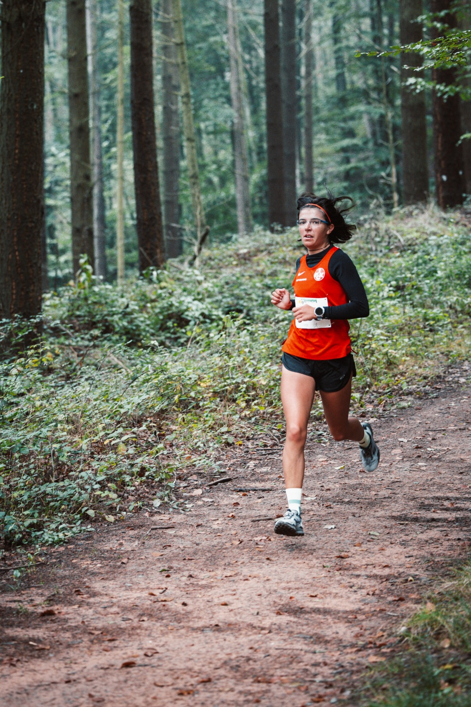
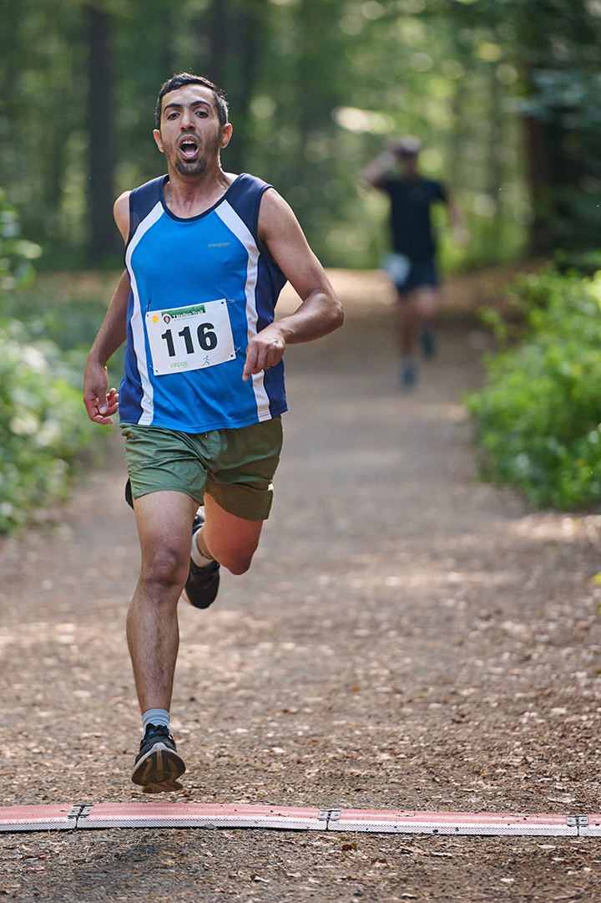
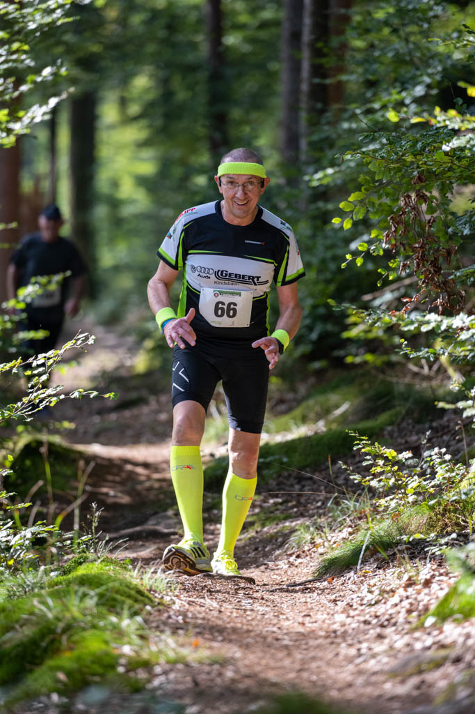
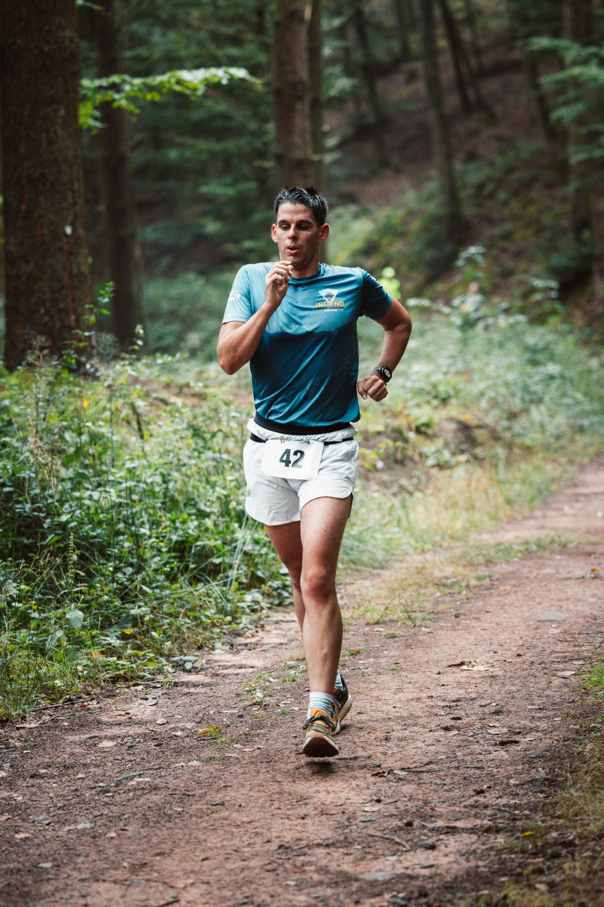
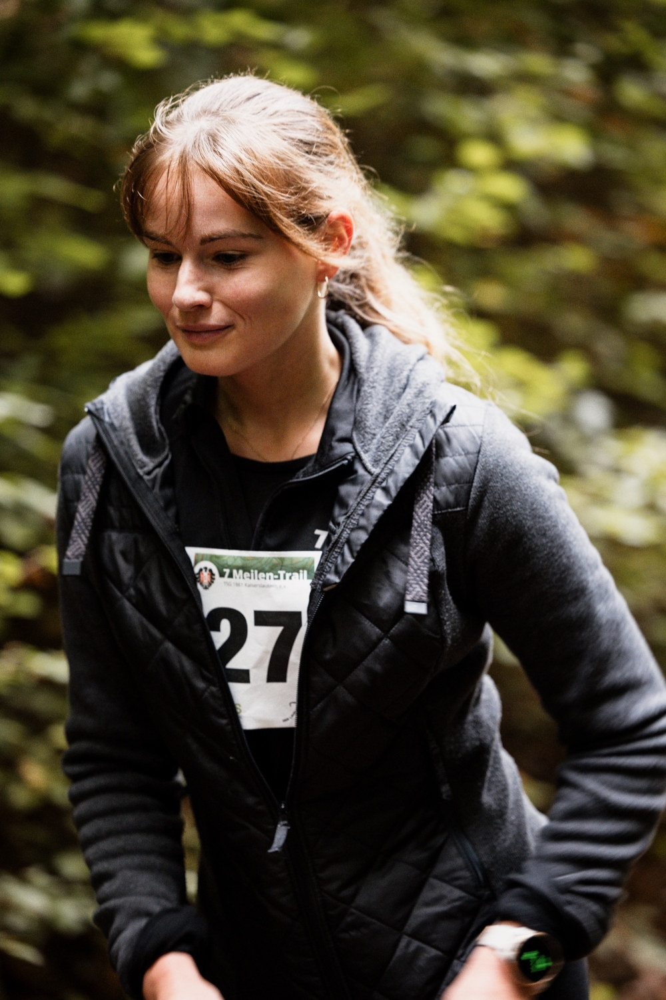

| MÄNNER | |||
| 2024 | Alexander Barnsteiner | LLG Landstuhl | 00:43:10 |
| 2023 | Jens Becker | TV Lemberg | 00:44:13 |
| 2022 | Lukas Rheinheimer | TV Rodenbach | 00:44:49 |
| 2018 | Alexander Barnsteiner | LLG Landstuhl | 00:44:56 |
| FRAUEN | |||
| 2022 | Marie Pröpsting | VfL Eintracht Hannover | 00:50:52 |
| 2019 | Marlene Zinsmeister | Karate Verein Shotokan Homburg | 01:00:33 |
| 2018 | Karin Gries | 1. FC Kaiserslautern | 01:00:43 |
| WALKING | |||
| 2025 | Jürgen Engels | LT Olympia Ramstein | 01:24:17 |
| 2024 | Jürgen Engels | LT Olympia Ramstein | 01:31:45 |
| MÄNNER | |||
| 2024 | Ibrahim Al-Kweish | St. Ingbert | 00:25:15 |
| 2023 | Ibrahim Al-Kweish | NGD | 00:28:59 |
| FRAUEN | |||
| 2025 | Anna Meyer | 1. FC Kaiserslautern | 00:28:08 |
| 2023 | Emilia Becker | TV Lemberg | 00:31:32 |
| WALKING – MÄNNER | |||
| 2025 | Christian Geimer | LC Olympia Wiesbaden | 00:41:17 |
| 2024 | Ingo Kreißelmeyer | Ohne Verein | 00:49:29 |
| WALKING – FRAUEN | |||
| 2025 | Nadja Bold | Ohne Verein | 00:48:26 |
| 2024 | Tanja Steuerwald | Ohne Verein | 01:01:00 |







| FRAUEN | |||
| 2025 | Marlene Zinsmeister | Thaibombs Mannheim | 0:54:39 |
| 2024 | Constanze Schmidt | LC Donnersberg | 0:52:00 |
| 2023 | Lena Stahlschmitt | Ohne Verein | 0:54:25 |
| 2022 | Marie Pröpsting | VfL Eintracht Hannover | 0:50:52 |
| 2021 | Coronavirus Δ | DISQ | |
| 2020 | Coronavirus α | DISQ | |
| 2019 | Marlene Zinsmeister | Karate Verein Shotokan Homburg | 1:00:33 |
| 2018 | Karin Gries | 1. FC Kaiserslautern | 1:00:43 |
| MÄNNER | |||
| 2025 | Alexander Barnsteiner | LLG Landstuhl | 0:43:58 |
| 2024 | Alexander Barnsteiner | LLG Landstuhl | 0:43:10 |
| 2023 | Jens Becker | TV Lemberg | 0:44:13 |
| 2022 | Lukas Rheinheimer | TV Rodenbach | 0:44:49 |
| 2021 | Coronavirus Δ | DISQ | |
| 2020 | Coronavirus α | DISQ | |
| 2019 | Thorsten Müller | Ohne Verein | 0:46:03 |
| 2018 | Alexander Barnsteiner | LLG Landstuhl | 0:44:56 |
| WALKING | |||
| 2025 | Jürgen Engels | LT Olympia Ramstein | 01:24:17 |
| 2024 | Jürgen Engels | LT Olympia Ramstein | 01:31:45 |
| FRAUEN | |||
| 2025 | Anna Meyer | 1. FC Kaiserslautern | 0:28:08 |
| 2024 | Antje Sorowla | Ohne Verein | 0:37:31 |
| 2023 | Emilia Becker | TV Lemberg | 0:31:32 |
| MÄNNER | |||
| 2025 | Ludwig Göbel | Freitags Club | 00:31:38 |
| 2024 | Ibrahim Al-Kweish | St. Ingbert | 0:25:15 |
| 2023 | Ibrahim Al-Kweish | NGD | 0:28:59 |
| WALKING – FRAUEN | |||
| 2025 | Nadja Bold | Ohne Verein | 0:48:26 |
| 2024 | Tanja Steuerwald | Ohne Verein | 1:01:00 |
| WALKING – MÄNNER | |||
| 2025 | Christian Geimer | LC Olympia Wiesbaden | 0:41:17 |
| 2024 | Ingo Kreißelmeyer | Ohne Verein | 0:49:29 |